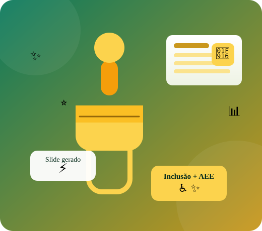
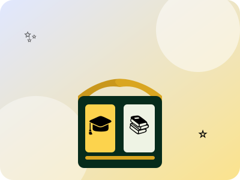
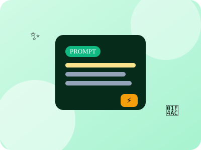
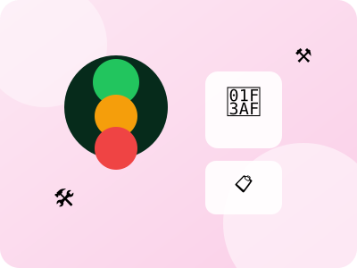

Seu tempo é precioso — por isso o foco aqui é diminuir sua carga horária. Capacite-se a criar materiais didáticos com Inteligência Artificial em minutos, adaptá-los para a inclusão (AEE, TEA, TDAH) e usar a IA como aliada no engajamento de turmas desafiadoras. Este curso foi desenhado para a realidade do professor brasileiro: aulas 100% práticas, prompts prontos para copiar e colar, e estratégias que funcionam da Educação Infantil ao Ensino Médio — mesmo quando a escola tem pouca estrutura ou pouca internet.

Todo o conteúdo organizado em 4 lugares simples — menos confusão, mais prática.

Objetivos, formato, ferramentas e os 6 módulos com todo o conteúdo e checklists.
Ver o curso →Apresentações prontas para assistir e projetar — curso completo + temas de gestão e sala de aula.
Abrir apresentações →
58 comandos prontos, organizados por tema e por ferramenta (Gamma, Canva, ChatGPT e mais).
Ver prompts →Aprofunde cada módulo com leituras rápidas, glossários e guias para estudar no seu ritmo.
Estudar →
Ferramentas prontas para usar em sala: semáforo, gerador de plano de aula e quiz jogável.
Usar ferramentas →Uma trilha prática e objetiva, com prompts para copiar e aplicar no dia seguinte. Cada módulo combina fundamentos, exemplos reais da sala de aula, ferramentas e um checklist de entregas — para você sair do curso com materiais prontos, e não apenas com teoria.
Gamma, Canva Design Mágico, Google Slides + Gemini e ChatGPT para criar apresentações completas em minutos. Passo a passo de cada ferramenta, prompts prontos e adaptação por faixa etária — da Educação Infantil, com muita imagem e poucas palavras, ao Ensino Médio, com dados, infográficos e quiz.
Ver conteúdo →CAA, pictogramas, Easy Read e design anti-sobrecarga para TEA e TDAH. Aprenda a transformar qualquer material em versão acessível — leitura fácil, rotinas visuais, quadros de antecipação, legendas, audiodescrição e alto contraste — com a ajuda da IA e o olhar do AEE.
Ver conteúdo →A IA como tutora de estudos, ética em trabalhos e avaliações à prova de IA. Ensine os alunos a usar a IA sem colar, entenda como funcionam os detectores (e suas falhas) e redesenhe suas avaliações com defesa oral, rubricas e aplicação prática — o que a IA não faz por ninguém.
Ver conteúdo →Dinâmicas, storytelling, 3 níveis numa mesma turma e combinados em slides para alunos rebeldes. Ferramentas para engajar turmas difíceis: quebra-gelos, quizzes, caça ao tesouro, contrato de convivência pactuado e jogos de regras que criam pertencimento.
Ver conteúdo →Tema transversal (BNCC): o Bloco 1 do Ensino Médio com vida familiar, vida social e bens pessoais. Orçamento, poupança e pressão do grupo, na metodologia "Situações + Experimente!", com prompts para gerar simulações e jogos de orçamento.
Ver conteúdo →Uma abordagem interdisciplinar para o Ensino Médio: escala nano, nanopartículas e suas propriedades, aplicações do cotidiano, riscos e ética — a partir da história de Rita, com prática de observação e debate crítico.
Ver conteúdo →Não se trata de automatizar o que você faz, mas de ganhar tempo para o que realmente importa: olhar nos olhos dos alunos, acolher as diferenças e criar aulas que marcam. A IA é uma ferramenta nas suas mãos — e neste curso você aprende a usá-la com direção e propósito.
Materiais didáticos prontos em minutos, não em horas: roteiro, slides, exercícios e dinâmicas gerados enquanto você organiza o restante da aula. O que antes levava uma tarde inteira sai em 15 minutos.
Comunicação Alternativa, leitura fácil, pictogramas e design anti-sobrecarga sensorial: materiais acessíveis para todos os alunos, incluindo TEA, TDAH e deficiência intelectual. A IA ajuda a adaptar, mas o olhar pedagógico é seu.
Quizzes, storytelling interativo, caça ao tesouro e jogos de combinados que transformam turmas apáticas em turmas participantes. Estratégias testadas em sala que funcionam inclusive com alunos rebeldes ou desengajados.
Ensinar os alunos a usar a IA como tutora de estudos — sem colar, sem depender — e avaliar de formas que a IA não responde por eles: defesa oral, rubricas claras, aplicação prática e reflexão pessoal.
Acesse o modo apresentação e navegue pelo conteúdo completo do curso em 82 slides interativos — mais 119 slides nas 10 coleções temáticas (com leitura e aprofundamento) — ou explore o banco de prompts e comece a criar seus materiais hoje mesmo. Em 15 minutos você já sai com um slide pronto para usar.